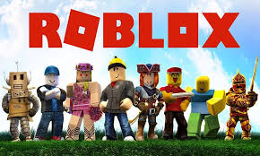
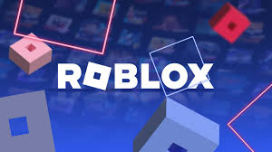

Roblox is one of the biggest online gaming platforms in the world. Millions of players join Roblox every day to explore games, hang out with friends and create their own virtual worlds. Unlike normal games, Roblox allows players to create their own games using Roblox Studio. This makes Roblox unique because players are not just gamers — they can become creators too.

Why Roblox Became So Popular
Roblox became popular because it gives players unlimited freedom. There are thousands of different experiences available inside Roblox. You can play horror games, racing games, roleplay games, anime adventures, survival games and much more. Players also enjoy customizing their avatars with cool outfits, animations and accessories.
🎮 Roblox supports multiplayer gameplay, voice chat, cross-platform gaming and creative building tools.

Best Roblox Games
Some of the most famous Roblox games include:
🔥 Brookhaven RP
🔥 Blox Fruits
🔥 Doors
🔥 Adopt Me
🔥 Arsenal
🔥 BedWars
🔥 Anime Adventures
Every game inside Roblox has its own unique gameplay style. Some games focus on PvP battles while others focus on exploration, storytelling or roleplay.

Roblox Graphics & Gameplay
Over the years Roblox graphics have improved a lot. Modern Roblox games now include realistic lighting, better textures, smooth animations and advanced effects. Many creators now make professional quality games that look similar to AAA games.
⚡ Roblox is available on PC, Mobile, Xbox and many other devices.
Is Roblox Worth Playing?
Yes — Roblox is still one of the best free online gaming platforms. Whether you enjoy action, horror, roleplay or funny games, Roblox offers endless entertainment. The platform continues growing every year with new creators, better graphics and exciting new experiences.
Play Roblox